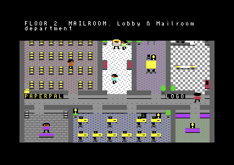
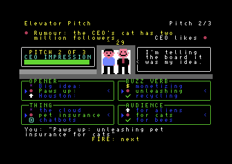
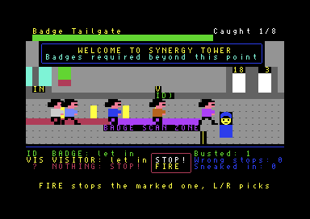
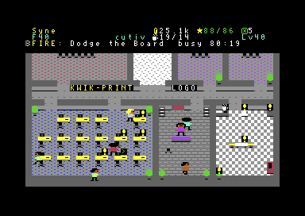

At a glance
- Platform
- Commodore 64 (PAL), 1541 disk drive, or an emulator such as VICE
- Disks
- 4 double-sided disks: 8 D64 images, boot from disk 1 side A
- Content
- 40 floors in 8 departments, 33 mini-games plus the HR performance review
- Controls
- Joystick in port 2, or WASD / cursor keys with SPACE or RETURN
- Saving
- Your career is saved to the disk in the drive
- Price
- Free and open source (GPL-3.0)
- Version
- 1.0, October 2026
Screenshots




How to play it
In an emulator (VICE)
- Download and unzip
synergy-tower-c64.zip. Keep the images writable: the game saves to them. - Start
x64sc(VICE) and dragsynergy-1a.d64onto its window, or use File › Smart attach and Autostart. - Leave true drive emulation on (VICE's default): the game brings its own fast loader.
- When the game says
Please insert disk 2, side A
, attachsynergy-2a.d64to drive 8 (Alt+8, on a Mac Cmd+8) and press FIRE.
On a real Commodore 64
- Write the eight images to four double-sided floppies for a 1541, or copy them to a device that emulates a full 1541 drive (1541 Ultimate, Ultimate 64, Pi1541).
- Insert disk 1 side A and type
LOAD"*",8,1, thenRUNif it doesn't start by itself. - SD2IEC and other devices that only speak the serial protocol won't work: the loader runs its own code in the drive.
Developed and tested on PAL in VICE with true drive emulation. The title screen appears about 37 seconds after the load starts.
The disks
Each side holds five floors of one department, with its own art, colleague lines, mini-games and save slot. The game checks that you inserted the right one.
| Image | Disk | Floors | Department |
|---|---|---|---|
synergy-1a.d64 | 1, side A (boot) | 1–5 | Lobby & Mailroom |
synergy-1b.d64 | 1, side B | 6–10 | Customer Support |
synergy-2a.d64 | 2, side A | 11–15 | Sales |
synergy-2b.d64 | 2, side B | 16–20 | Marketing |
synergy-3a.d64 | 3, side A | 21–25 | IT |
synergy-3b.d64 | 3, side B | 26–30 | Finance |
synergy-4a.d64 | 4, side A | 31–35 | Legal & HR |
synergy-4b.d64 | 4, side B | 36–40 | Executive Suite and the CEO ending |
The game
SynergyTower is a satire of office life. Every floor of the tower is a department full of colleagues, desks, printers and meeting rooms. Tasks are short mini-games that cost coffee and pay paperclips (the office currency), experience and up to three KPI stars. Collect enough stars, reach the required level and pay the keycard fee, then pass the HR performance review, and the elevator takes you one floor up.
The C64 version has the whole career of the browser game: the street intro, the lobby check-in, colleagues to
talk to, sponsor posters, coffee, perks, training, the elevator, a workstation terminal where
systemctl isolate level23.target takes you to floor 23, the CEO's personnel decisions and the ending.
All 33 mini-games
Jargon Decoder, Meeting Buzzword Bingo, Cable Spaghetti, Coffee Run, Name Badge Memory, Badge Tailgate, Coffee Crossing, Expense Fraud Detective, Schedule the Meeting, Elevator Pitch, Reply-All Apocalypse, Desk Plant Survival, Magic Chart, Fridge Tetris, Lost Password, 360 Feedback, Whack-a-Bug, Org Chart Reorg, Corporate Quiz, Server Rack Sequence, Meeting Survival, Perfect Timing, Inbox Zero, Slide Karaoke, Boss Alert, Compose the Email, Calendar Defender, Process Order, Password Policy, Fix the Spreadsheet, Speed Typing, Quarterly Ticker and Expense Report, plus the HR Performance Review.
Controls
Joystick in port 2, or WASD / cursor keys and FIRE / SPACE / RETURN. On a floor: RUN/STOP opens the menu, B the shop, P perks, T training, S your numbers, M toggles the music, H shows how to play.
Under the hood
The C64 version is written in 6502 assembly (ca65) and generated from the browser game's own JavaScript modules: the floors, the mini-games' content, the economy, the colleagues' lines and the tracker music are converted at build time, so both versions share one tower.
- A fast loader with a 2-bit transfer that keeps the music playing while it loads, plus disk writes for the save game.
- A sprite multiplexer: up to 16 people on screen with the C64's 8 hardware sprites.
- Smooth vertical scrolling under a fixed status bar, with double-buffered screens.
- Its own LZ packer, and floors stored as differences from a template floor, so five floors and their mini-games fit on each disk side.
- Byte-pair compressed text and a three-voice SID soundtrack converted from the browser game's songs.
The source code and a technical write-up are on GitHub.
FAQ
Is it really free?
Yes, free and open source under the GPL-3.0. If you enjoy it, buy me a coffee.
Does it run on NTSC machines?
It was developed and tested on PAL. NTSC hasn't been tested.
Why four disks?
Each department has its own character set, colleagues and mini-game content. Five floors with their mini-games fill a 170 KB disk side, and the tower has 40 floors.
Where is my save game?
On the disk side in the drive. When you continue from disk 1, the game follows your newest save and asks for the right disk.
What is different from the browser version?
No mouse, 40 columns and 16 colours, no clock while the C64 is off (coffee refills only while it runs), and the terminal has fewer tricks. Web links such as the feedback form are shown as addresses.
Found a bug?
Tell me through the feedback form.